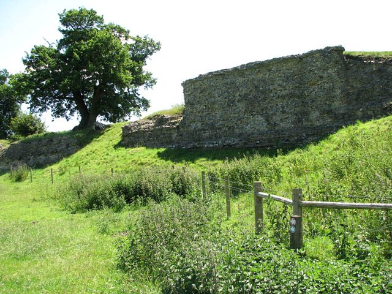
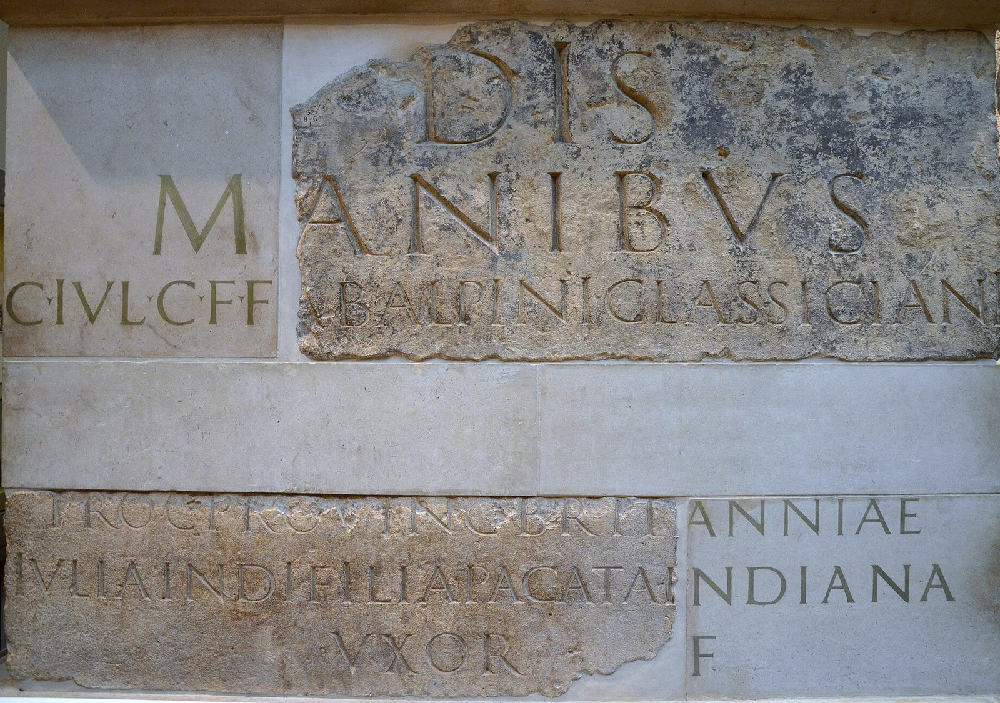

Unit 4 · Boudicca · Lesson 11
Aftermath: consequences for the Celts and the Romans
The battle was won. What happened next to the Britons who had rebelled, and to the Romans who ruled them, and how sure can historians be?
Year 11 Ancient History · Present with → or space · Read on a phone with R

Review · books closed · 6 minutes · press K for the timer
Six questions from Lessons 5–10
- What was Decianus Catus’s job, and what did he do when the colony at Camulodunum asked him for help? He was the procurator, the official who ran the province’s finances and taxes. He sent ‘two hundred men, and no more, without regular arms’; later he fled to Gaul (Annals 14.32).
- What happened to the Ninth Legion when it marched to help? The rebels met its commander, Petillius Cerialis, ‘routed his troops, and destroyed all his infantry’; Cerialis escaped with some cavalry (Annals 14.32).
- Name one Roman tactic in the final battle, as Tacitus describes it. Any one: Suetonius chose a narrow defile ‘closed in at the rear by a forest’ (Annals 14.34); the legion threw its missiles, then ‘rushed out in a wedge-like column’; the cavalry charged ‘with extended lances’ (14.37).
- What size does Dio give Boudicca’s army? Dio gives ‘about 230,000 men’ at the final battle (62.8); earlier he says she assembled ‘some 120,000’ (62.2). Round numbers: claims, not counts.
- How did Boudicca die, according to Tacitus and according to Dio? Tacitus: she ‘put an end to her life by poison’ (Annals 14.37). Dio: she ‘fell sick and died’ and was given ‘a costly burial’ (62.12). The two writers disagree.
- Writing · move this claim down the modality scale: “The Longinus tombstone proves the rebels defaced it.” “The Longinus tombstone may have been pulled down during the revolt, but its re-excavators’ evidence strongly suggests that its face broke off after the stone was already lying down, so it cannot confirm that rebels defaced it.” Proves claims too much: the evidence fits a fall, not an attack on its face.
Mark your own answers in a different colour. Which question did you find hardest?
Learning intentions and success criteria · 2 minutes
Today’s goals
- analyse the consequences of the revolt for the Celts and the Romans
- write an introduction: context and a thesis that previews the argument
- explain two short-term and two long-term consequences
- propose an explanation and say what evidence would test it
- write an introduction whose context sentence uses expanded noun groups
Syllabus outcomes: AH-11-01 explains continuity and change in the ancient world · AH-11-02 proposes ideas about the varying causes and effects of events and developments · AH-11-05 analyses different types of sources for evidence to support a historical account or argument · AH-11-07 communicates historical understanding, applying historical knowledge, terms and concepts. Life Skills: AH-LS-03 identifies continuity and change in the ancient world · AH-LS-11 communicates information about the past using historical terms and concepts.
Note-making · the routine for the whole course
How to structure your notes
questions and key terms, written after
short phrases, arrows (→ leads to), abbreviations (c. = about; proc. = procurator)
- 1A new pageA cue column about a quarter of the page wide; title and date at the top; room for a summary at the bottom.
- 2Listen and look, then writeDon’t copy while a slide is being explained. Phrases, not sentences; a source for every claim.
- 3Write your own notes at each ✎ checkpointThen compare with the model notes, one row at a time. Add what you missed in a second colour.
- 4Write the cue questions afterwardsUse exam verbs: explain, propose, assess. To revise, cover your notes and answer the cues.
- 5Finish with a three-sentence summaryTwo checkpoints today: the aftermath in sequence · consequences: reported or inferred?
Key vocabulary · add to the unit word wall
Words for today
| Verb (NESA) | Meaning · what the answer does |
|---|---|
| Propose | ‘Put forward (for example a point of view, idea, argument, suggestion) for consideration or action.’ — An explanation, its support and what would test it. |
| Writing terms | Meaning |
| Expanded noun group | A noun packed with detail: ‘the Iceni, a once-allied people of eastern Britain’. |
| Thesis preview | The part of the thesis that names, in order, the reasons the body paragraphs will argue. |
| Added today | Meaning |
| Short-term / long-term consequence | A result that follows within months or a few years / a result that lasts, or appears, over many years or decades. |
| Content terms | Meaning |
|---|---|
| Governor / procurator | The emperor’s army commander and chief judge in a province (Suetonius Paulinus) / the official who ran its finances and taxes (Decianus Catus). |
| Freedman | A former slave; Nero’s freedman Polyclitus was sent to investigate Britain. |
| Punitive campaign | Military action meant to punish, such as the ravaging of hostile peoples after the battle. |
| Civitas | A self-governing community of a people in a Roman province, such as the Iceni at Venta Icenorum. |
1 · The aftermath in sequence · I do — Tacitus on the months after the battle
After the battle: punishment and famine
The emperor strengthened the forces by sending from Germany two thousand legionaries, eight cohorts of auxiliaries, and a thousand cavalry. … whatever tribes still wavered or were hostile were ravaged with fire and sword. Nothing however distressed the enemy so much as famine, for they had been careless about sowing corn, people of every age having gone to the war, while they reckoned on our supplies as their own.
Tacitus (about 55–120 CE), a Roman senator and historian, Annals 14.38, written about 55 years after the revolt · trans. A. J. Church and W. J. Brodribb (1876)
- 1More Roman troopsFrom Germany: 2,000 legionaries, eight cohorts of auxiliaries and 1,000 cavalry. The Ninth Legion, which had lost its infantry, was brought back up to strength.
- 2A punitive campaignAny people that had wavered or fought was ‘ravaged with fire and sword’. The army was kept in the field; the auxiliaries got new winter quarters.
- 3FamineThe Britons had not sown their crops, Tacitus says, because everyone had gone to war, expecting to live on Roman supplies.
Who suffered the famine, and whose explanation of it is this?
The Britons, ‘the enemy’. The explanation is Tacitus’s, a Roman view that blames the Britons themselves. He does not say whether the ravaging of their lands made the famine worse: that is a question a historian could ask, not something he reports.
1 · The aftermath in sequence · I do → cold call · a quarrel and an inquiry
A new procurator, a quarrel and an inquiry
Nations, too, so high-spirited inclined the more slowly to peace, because Julius Classicanus [Classicianus], who had been sent as successor to Catus and was at variance with Suetonius, let private animosities interfere with the public interest, and had spread an idea that they ought to wait for a new governor who … would deal mercifully with those who had surrendered. At the same time he stated in a despatch to Rome that no cessation of fighting must be expected, unless Suetonius were superseded …
Tacitus, Annals 14.38 · trans. A. J. Church and W. J. Brodribb (1876)
Accordingly one of the imperial freedmen, Polyclitus, was sent to survey the state of Britain, Nero having great hopes that his influence would be able not only to establish a good understanding between the governor and the procurator, but also to pacify the rebellious spirit of the barbarians. … But to the enemy he was a laughing-stock … Everything, however, was softened down for the emperor’s ears …
Tacitus, Annals 14.39 · trans. A. J. Church and W. J. Brodribb (1876)
- 1Julius Classicianus · the new procuratorSent to succeed Catus. He quarrelled with the governor, Suetonius, told the Britons to wait for a merciful governor, and wrote to Rome against Suetonius.
- 2Polyclitus · Nero’s freedmanA former slave of the emperor’s household, sent to inquire: to reconcile governor and procurator, and to calm the Britons. Everything was ‘softened down for the emperor’s ears’, Tacitus says.
Whose side is Tacitus on: the governor’s or the procurator’s? Which words show it?
Mostly the governor’s. He blames Classicianus for letting ‘private animosities interfere with the public interest’, and gives the despatch against Suetonius only as the procurator’s claim. He scorns Polyclitus too: a freedman who was ‘a laughing-stock’ to the Britons. Yet the policy Classicianus urged, mercy for those who surrendered, is close to what Rome soon chose.
1 · The aftermath in sequence · I do — think aloud · what can a tombstone tell us?
The tombstone of Julius Classicianus

To the spirits of the departed (and) of Gaius Julius Alpinus Classicianus, son of Gaius, of the Fabian voting-tribe, … procurator of the province of Britain; Julia Pacata I[ndiana], daughter of Indus, his wife, had this built.
RIB 12 (Roman Inscriptions of Britain), London, mid–late 1st century CE · the editors’ translation · “…” marks lines that are lost · only I[ndiana] is bracketed, but “Gaius Julius”, “son of Gaius” and “had this built” are restorations too, cut on the modern blocks
What does the tombstone confirm about Classicianus, and what can it not tell us?
| It confirms | It cannot tell us |
|---|---|
| his name, Alpinus Classicianus: with his post, Tacitus’s Classicianus (“Gaius Julius” is a modern restoration) | his policy, or his quarrel with Suetonius |
| his post: ‘procurator of the province of Britain’ | whether Tacitus is fair to him |
| his wife: Julia Pacata, daughter of Indus | when or how he died, or what the lost lines said |
| his tomb stood at London; its stones were later reused in the town wall | whether the modern letters restore the lost words correctly |
1 · The aftermath in sequence · I do — a new governor, and two verdicts by one writer
A new governor, and two verdicts on him
… as he [Suetonius] subsequently lost a few vessels on the shore with the crews, he was ordered, as though the war continued, to hand over his army to Petronius Turpilianus, who had just resigned his consulship. Petronius neither challenged the enemy nor was himself molested, and veiled this tame inaction under the honourable name of peace.
A history of the emperors, published after 113 CE · trans. A. J. Church and W. J. Brodribb (1876)
Excellent as he [Suetonius] was in other respects, his policy to the conquered was arrogant, and exhibited the cruelty of one who was avenging private wrongs. Accordingly Petronius Turpilianus was sent out to initiate a milder rule. A stranger to the enemy’s misdeeds and so more accessible to their penitence, he put an end to old troubles, and, attempting nothing more, handed the province over to Trebellius Maximus.
A life of his father-in-law Agricola, who served in Britain under Suetonius; published in 98 CE · trans. A. J. Church and W. J. Brodribb (1877)
How do the two verdicts on Turpilianus differ? Which words show it?
The Annals sneers: he did nothing and called it peace (‘tame inaction’ under ‘the honourable name of peace’). The Agricola gives mild praise: after Suetonius’s ‘arrogant’ policy he was sent ‘to initiate a milder rule’ and ‘put an end to old troubles’, though ‘attempting nothing more’ has a sting. One man, one writer, two judgements.
Explain how each work’s purpose may shape Tacitus’s verdict on Turpilianus.
Notes checkpoint 1 of 2
The aftermath in sequence
2 · Consequences · We do — pairs fill the grid in your booklet · then compare, row by row
Consequences for the Celts and the Romans
In pairs: at least one consequence in each box, with its source. Then tag each one: reported a writer says so · archaeology found in the ground · inferred a link historians draw, not proven.
| For the Celts | For the Romans | |
|---|---|---|
| Short term · in the field | Peoples that ‘still wavered or were hostile’ were ‘ravaged with fire and sword’ (Ann. 14.38) reported | Reinforcements from Germany: 2,000 legionaries, eight auxiliary cohorts, 1,000 cavalry; the Ninth Legion refilled (14.38) reported |
| Short term · food and politics | Famine: crops not sown, Tacitus says, because everyone had gone to war (14.38) reported | The new procurator quarrels with the governor; Polyclitus inquires; Suetonius is replaced by Petronius Turpilianus (14.38–39) reported |
| Long term · how Britain was ruled | A milder rule that lasted: Turpilianus, ‘more accessible to their penitence’, ‘put an end to old troubles’, and Trebellius ‘controlled the province by a certain courtesy in his administration’ (Agr. 16) reported | No new conquests under the next governors: Trebellius ‘never ventured on a campaign’ (Agr. 16); to the Annals, ‘tame inaction’ reported · that the revolt caused the pause (Tacitus also blames Trebellius’s indolence and the civil war) inferred |
| Long term · places | Fison Way enclosure dismantled in the 60s or 70s CE by its finds (NHER: by the mid-60s): perhaps on Roman orders archaeology inferred · the Iceni later run as a civitas from Venta Icenorum, founded about 60 CE, in the 70s, or later (the date is debated) archaeology inferred | Towns rebuilt: at one London site (36–39 Poultry) ‘Recovery after the revolt was not immediate’; in Colchester rebuilding ‘probably started immediately’, and the town walls, about 65–80 CE, were probably built soon after the revolt and ‘presumably as a consequence of it’ archaeology inferred |
Notes checkpoint 2 of 2
Consequences: reported or inferred?
3 · You do · Writing focus · 8 minutes · I do → We do → apply · part 1: the I do
Writing focus: what makes an introduction strong?
The class question (not yours): To what extent was the mistreatment of the Iceni the main reason for the revolt of 60 or 61 CE?
The Iceni revolted against the Romans. Boudicca was their leader and the Romans flogged her. The revolt had many causes and they were all important.
Weak. Context: no when, where or who. Thesis: all important makes no judgement. Preview: none.
In 60 or 61 CE the Iceni of eastern Britain rose against Rome. Although the outrages against Prasutagus’s family sparked the Iceni’s revolt, they were only partly its main reason, because the grievances of other Britons largely explain why it spread.
Sound. Context: when and where, but thin. Thesis: a degree and a reason (Lesson 5’s). Preview: no. Which grievances, in what order?
In 60 or 61 CE the Iceni, a once-allied people of eastern Britain, rose against Rome after the plunder of their late king’s estates, and the rebels went on to destroy Camulodunum, Londinium and Verulamium. Here, mistreatment means the plunder and the outrages against the royal family and nobles that Tacitus describes. The flogging of Boudicca and the plunder of Prasutagus’s kingdom sparked the Iceni’s rising, but they were only partly the main reason for the revolt, because the veterans’ seizures at Camulodunum and the cost of the imperial cult gave the Trinovantes and other Britons grievances of their own.
Strong. Context: expanded noun groups say who, when, where and what set it off. Key term limited. Thesis: a degree that previews three paragraphs, in order: the Iceni’s mistreatment → the veterans → the imperial cult. No separate signposting sentence.
3 · You do · Writing focus · part 2: I do → We do → apply
Writing focus: pack the context, preview the argument
Build a context sentence from a kernel. Add, in turn: when · who, as an expanded noun group · a precise verb · what set it off.
Kernel: The Iceni revolted.
Worked example · the program’s model context sentence
In 60 or 61 CE the Iceni, a once-allied people of eastern Britain, rose against Rome after the plunder of their late king’s estates.
When: both dates, because the year is debated
Who: an expanded noun group
Verb: precise, not revolted again
What set it off
Lesson 5’s class thesis is sound, but it does not preview. Plan A orders the body paragraphs by group: ¶1 the Iceni · ¶2 the Trinovantes · ¶3 other Britons. Extend the thesis so it names each group’s reason, in that order.
Lesson 5: Although the outrages against Prasutagus’s family sparked the Iceni’s revolt, they were only partly its main reason, because the grievances of other Britons largely explain why it spread.
Although the outrages against Prasutagus’s family sparked the Iceni’s revolt, they were only partly its main reason, because the Trinovantes’ anger at the veterans of Camulodunum, who had probably taken their farms, and the secret plan of other Britons ‘to reclaim their freedom’ largely explain why it spread.
Your introduction on the Catus question, the next task. First, your context sentence: when · who, as an expanded noun group · a precise verb · what. It must set up what your question names: who Decianus Catus was, and when. Then your thesis: your degree on Catus’s responsibility, previewing your Lesson 6 plan’s reasons, in your order. Your Writing toolkit (booklet pages 3–4).
3 · You do · 9 minutes · deconstruct first · then write · press K for the timer
To what extent was Decianus Catus responsible for the revolt of 60 or 61 CE?
Deconstruct it: what does this question ask you to do?
- Verb
- to what extent: a judgement of degree (largely, partly, only in part), not yes or no; NESA calls it a self-explanatory term, not a glossary word
- Topic
- Decianus Catus, the procurator: how far his actions caused the revolt
- Limits
- the revolt of 60 or 61 CE; Catus as Tacitus and Dio present him, weighed against the other causes
- Do
- today, the introduction: context that sets up Catus and the revolt, then a thesis of degree on his responsibility that names your plan’s reasons, in your order
- Context: when, where and who, with expanded noun groups. Say who Catus was.
- If it helps, say what responsible means for your answer.
- Thesis: your degree on Catus’s responsibility, naming your Lesson 6 reasons in your plan’s order. No sentence announcing the essay.
Add one sentence on why historians might disagree about Catus’s part, without answering the question in it.
Check first: what does a thesis that previews do that Lesson 5’s thesis did not?
It names the reasons the body paragraphs will argue, in the order they come, inside the thesis itself. So no separate sentence needs to announce the essay.
Frame: “In 60 or 61 CE …, … . Although …, Decianus Catus was largely / only partly responsible for the revolt, because [reason 1], [reason 2] and [reason 3].” Use your Lesson 6 plan and the context steps: when · who · verb · what.
3 · You do · 9 minutes · a new verb · deconstruct first · then write
Propose an explanation for the dismantling of the Fison Way enclosure in the mid-60s CE, and say what evidence would test it.
Propose: ‘Put forward (for example a point of view, idea, argument, suggestion) for consideration or action.’ NESA, Glossary of key words
Deconstruct it: what does this question ask you to do?
- Verb
- propose: put an explanation forward for consideration, not prove it
- Topic
- why the Fison Way enclosure was taken apart
- Limits
- Fison Way only; the mid-60s CE; the evidence on this page
- Do
- an explanation, hedged · the evidence that supports it · what new evidence would test it (department advice)
Check first: how is a propose answer different from an explain answer?
It puts an explanation forward for others to weigh, so it is hedged (one possible explanation …) and says what evidence would test it. An explain answer shows how or why, with the links stated.
Propose a second explanation that does not involve the revolt, and say what evidence would decide between the two.
- About 50 CE: rebuilt far larger: fences up to nine deep, five circular buildings, a massive gateway
- The 60s CE: after ‘an apparently short life’, the structures were dismantled (NHER 5853 dates the end to the mid-60s)
- How: the posts were pulled out, not left to rot; so few traces survive that the timbers were probably still sound enough to come out whole
- Found: a small number of pieces of Roman military metalwork
- The date: the finds alone put the end in the 60s or 70s CE; the excavator narrowed it to the early 60s by fitting it to Tacitus
From: NHER 5853; A. Gregory, Excavations in Thetford, 1980–82, Fison Way (1991)
Frame: “One possible explanation is that …, since …; this could be tested by …”
Your Writing toolkit (booklet pages 3–4): the directive verbs.
3 · You do · after you write · compare yours with a model
A model proposal: why was Fison Way taken apart?
One possible explanation, which its excavator put forward, is that Roman troops, or workers they controlled, took the Fison Way enclosure apart soon after the revolt to remove a meeting place for further resistance, since its posts were pulled out deliberately rather than left to rot, a few pieces of Roman military metalwork were found there, and the Norfolk record dates its end to the mid-60s CE. The case is weaker than it looks, however, because the finds alone date the end only to the 60s or 70s CE: the closer date depends on fitting the site to Tacitus. This explanation could be tested by datable objects sealed in the post-holes when the posts came out, by Roman military equipment lying in the demolition deposits themselves, or by other sites in the Iceni’s area that were dismantled at the same time.
Check for understanding · hinge question · 3 minutes · hold up your A, B, C or D card on “3, 2, 1, show”
Who replaced Decianus Catus as procurator?
- APetronius Turpilianus
- BJulius Classicianus
- CPolyclitus
- DPetillius Cerialis
He was ‘sent as successor to Catus’ (Annals 14.38), and his tombstone calls him ‘procurator of the province of Britain’ (RIB 12). A replaced the governor, Suetonius, not the procurator. C was Nero’s freedman, sent to inquire. D commanded the Ninth Legion.
Exit ticket · 4 minutes · before you leave
Finish the sentence
“The biggest change after the revolt was … because …”
One change, named precisely · for whom: the Celts, the Romans, or both · when: short term or long term · its evidence, with the source (Tacitus, the tombstone, or the archaeology) · a hedge if the link to the revolt is inferred · a because that says why it is the biggest.
Then check yourself against today’s three “I can” statements. Next lesson: was Boudicca a client queen, an ally or a rebel?
Finish your notes If time · or at home
Summary: three sentences
- What did Rome do in the months after the battle?
- What does the tombstone of Classicianus confirm, and what can it not tell us?
- Which consequences does Tacitus report, and which do historians infer from archaeology?
In the months after the battle Rome reinforced its army from Germany and ravaged the peoples it judged hostile, and, after a quarrel between the governor and the new procurator and an inquiry by Nero’s freedman Polyclitus, it replaced Suetonius with Petronius Turpilianus. The tombstone of Julius Classicianus confirms his name, his post as procurator of Britain and his wife’s name, but it cannot tell us about his policy or his quarrel with Suetonius. Tacitus reports the famine and a milder rule, whereas the dismantling of Fison Way, the rebuilding of the towns and the founding of Venta Icenorum come from archaeology, and how far each was caused by the revolt is inferred, and in places debated.
Practice and review · 1 of 4 · true, false, justify
True or false? Justify your answer
- 1Julius Classicianus replaced Suetonius Paulinus as governor. False — he succeeded Catus as procurator; Petronius Turpilianus replaced Suetonius (Annals 14.38–39).
- 2Tacitus says the Britons suffered famine because they had not sown their crops. True — they had been ‘careless about sowing corn’ (14.38); the explanation is his.
- 3The tombstone of Classicianus tells us that he quarrelled with Suetonius. False — it gives his name, his post and his wife’s name (RIB 12); the quarrel is only in Tacitus.
- 4Tacitus judges Turpilianus in the same way in the Annals and the Agricola. False — ‘tame inaction’ in the Annals (14.39); sent ‘to initiate a milder rule’ in the Agricola (16).
- 5The Fison Way enclosure was certainly dismantled on Roman orders. False — its finds date the dismantling to the 60s or 70s CE (NHER 5853: by the mid-60s), and Roman orders are a possibility its excavator found suggestive, not proven.
- 6Colchester’s town walls were probably built soon after the revolt. True — dated to about 65–80 CE; ‘probably built soon after the revolt’ (VCH Essex 9).
Practice and review · 2 of 4 · writing · expanded noun groups
Pack the noun: three context sentences
Add when or where, an expanded noun group for the person, a precise verb and what, using today’s evidence.
a) Polyclitus came to Britain.
After the revolt Polyclitus, one of Nero’s freedmen, crossed to Britain with an enormous suite to survey the province and to reconcile its governor and its procurator.
b) Classicianus was commemorated in London.
Gaius Julius Alpinus Classicianus, the procurator who succeeded Catus, was commemorated at London on a tomb that names his wife, Julia Pacata.
c) Turpilianus governed Britain.
Petronius Turpilianus, a former consul sent out to replace Suetonius, governed Britain so quietly that Tacitus in one work praises his milder rule and in another mocks his inaction.
Practice and review · 3 of 4 · extension · explain
Why might one writer give two verdicts?
Tacitus gives Turpilianus two verdicts (Annals 14.39; Agricola 16): explain how each work’s purpose may shape the judgement.
Agricola (98 CE): a life of his father-in-law, which Livius says ‘resembles a funeral speech very much’. Annals (after 113 CE): a history of the reigns of Tiberius, Caligula, Claudius and Nero.
Tacitus’s two verdicts on Petronius Turpilianus may differ mainly because the two works had different purposes. The Agricola, a life of his father-in-law, tells the story of Britain’s governors before Agricola, so after Suetonius’s ‘arrogant’ policy Turpilianus appears as a necessary corrective, sent ‘to initiate a milder rule’, although ‘attempting nothing more’ already hints at a limit. The Annals, written later as a history of the emperors, uses the same months to expose Nero’s rule: a freedman makes a victorious general cringe, the report is ‘softened down for the emperor’s ears’, and so the new governor’s peace becomes ‘tame inaction’. The difference may therefore be less a change of mind than a change of emphasis, since in both works Tacitus seems to value active governors over quiet ones.
Practice and review · 4 of 4 · cover your notes and answer from memory
Quick checks
- What did Rome do straight after the battle? Kept the army in the field, sent 2,000 legionaries, eight auxiliary cohorts and 1,000 cavalry from Germany, refilled the Ninth, and ravaged the peoples that wavered or fought (Annals 14.38).
- Why does Tacitus say the Britons faced famine? They had not sown their crops, because everyone had gone to war, expecting to live on Roman supplies (14.38). It is his explanation.
- Who was Julius Classicianus, and what did he tell Rome? The new procurator, Catus’s successor. He told Rome that the fighting would not end unless Suetonius were replaced (14.38).
- What does RIB 12 confirm, and what can it not tell us? His name, his post (procurator of Britain) and his wife, Julia Pacata. Not his policy, his quarrel with Suetonius, or how he died.
- What was Polyclitus sent to do, and what happened to Suetonius? To reconcile governor and procurator and calm the Britons. Suetonius was kept on, then, after losing some ships, handed over to Petronius Turpilianus (14.39).
- What does propose ask for? NESA: ‘Put forward (for example a point of view, idea, argument, suggestion) for consideration or action.’ In our department’s words: an explanation, its support and what would test it.
Sources and credits
Where everything comes from
Tacitus, Annals 12.31, 14.31–32, 14.34, 14.37–39 and 3.42: trans. A. J. Church and W. J. Brodribb (1876, public domain), Perseus Digital Library (CC BY-SA 3.0 US); Agricola 16: trans. Church and Brodribb (1877), Perseus. Latin of Annals 14.38: ed. C. D. Fisher (Oxford, 1906), Perseus (CC BY-SA 3.0 US). Cassius Dio, Roman History 62.2, 62.8 and 62.12: trans. E. Cary (Loeb, vol. VIII, 1925), LacusCurtius (public domain in the US; quoted briefly). RIB 12: Roman Inscriptions of Britain online (text CC BY 4.0).
Norfolk Heritage Explorer, NHER 9786, Venta Icenorum and NHER 5853, Fison Way. A. Gregory, Excavations in Thetford, 1980–82, Fison Way, East Anglian Archaeology 53 (1991). Norfolk Archaeological Trust, “Caistor Roman Town”. Victoria County History, Essex 9 (1994), “Iron-Age and Roman Colchester”, British History Online. K. Pitt with F. Seeley, “Excavations at 36–39 Poultry, London EC2”, Transactions of the London and Middlesex Archaeological Society 64 (MOLA). J. Lendering, “Tacitus”, Livius.org (quoted briefly). The NESA Glossary of key words (definitions quoted word for word). Review answers: Lessons 5–10 and their sources; the Longinus re-excavation notes (Colchester Archaeological Group), as in Lesson 8.
Outcomes and content: NSW Education Standards Authority (NESA), Ancient History 11–12 Syllabus (2024). © NESA.
- The north wall of Venta Icenorum, the Roman town of the Iceni, Caistor St Edmund, Norfolk (walls of the 3rd century CE) · Photo: Evelyn Simak · CC BY-SA 2.0 · source
- The tombstone of Julius Classicianus, procurator of Britain (RIB 12), as reconstructed in the British Museum · Photo: Carole Raddato · CC BY-SA 2.0 · source

.jpg){kind=link}
All images are openly licensed, and were resized or cropped for the web. Each is shared under the licence shown. The British Museum’s own images are not used (non-commercial licence).